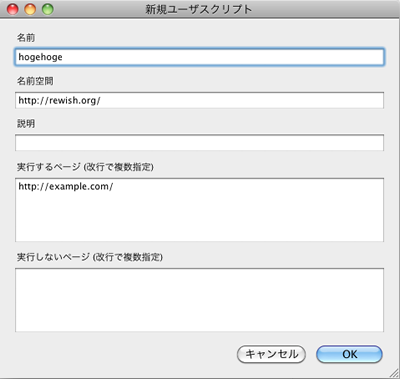

Greasemonkeyで楽しくJS学習
自己紹介

- rewish または rew で活動してます
- HTMLとかCSSとかJavaScriptとかPHPとかサーバー周りとか色々やってます
- JavaScriptを本格的に始めたのは2009年の5月末
- ブログ: http://rewish.org/
- Twitter: http://twitter.com/rewish
Greasemonkeyをオススメする5つの理由
- 書き始めるのが楽
- 手段が目的にならない
- あのブラウザに対応しなくて良い
- 作ったものは後で使える
- 公開すれば誰かを幸せに出来る
書き始めるのが楽
JavaScriptを学習するのにHTMLを書くのは面倒。
Greasemonkeyなら右クリックして新規ユーザースクリプトを作成するだけ！

手段が目的にならない
勉強しようとするとJavaScriptを書くことが目的になりますよね。
でもコレ、(僕は)正直つまらないです。
JavaScriptは手段！
既存サイトをより便利に！
便利にすることを目的にJavaScriptを書く！
あのブラウザに対応しなくて良い
HTML/CSS周りでも大変ヤンチャなあのブラウザ
JavaScriptでもヤンチャですよね・・・
でもGreasemonkeyで書く場合はFirefoxのことだけを考えれば良いのです！
document.querySelector (CSSセレクタでDOMを取得) とかも使い放題！
なんと言うパラダイス！
※jQuery使えよとか言わないで下さい＞＜
作ったものは後で使える
学習の課題で作ったスクリプトを後で使うことってそんなに無いですよね・・・
でもGreasemonkeyで書いたスクリプトは後でも使える！
なんたって既存サイトを便利にするのが目的なのだから！
テンション上がってきますね！
公開すれば誰かを幸せに出来る
便利さのお裾分け、してみませんか。
僕も適当に公開しています。
- アメーバの『ペタ』を手軽に付けられるGreasemonkey
- http://rewish.org/javascript/gm_ameba_petalink
3クリック必要なところを1クリックにするスクリプト。
僕は使ってないですけどね！
最後に
同じような理由で、Firebugのコンソール(ブックマークレット)やStylish(ユーザーCSS)などもオススメです。
- Firebug :: Add-ons for Firefox
- https://addons.mozilla.org/ja/firefox/addon/1843
- Stylish :: Add-ons for Firefox
- https://addons.mozilla.org/ja/firefox/addon/2108
終り
ご清聴ありがとうございました